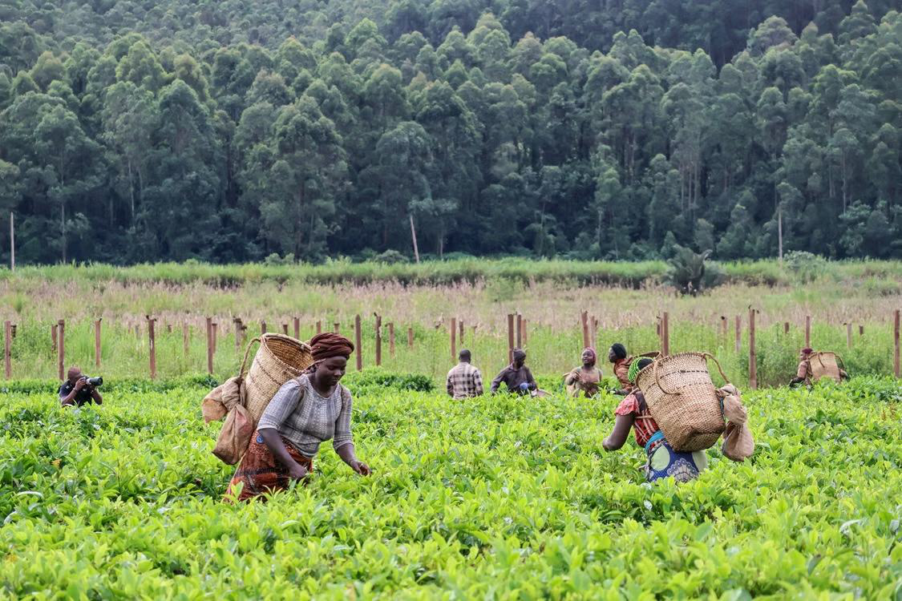

Twenty-First Century African Youth MovementYoung People.
Young People.
Real Power.
A Thriving Africa.
AYM works alongside young people to build skills, create opportunity, and develop community-led solutions to poverty.